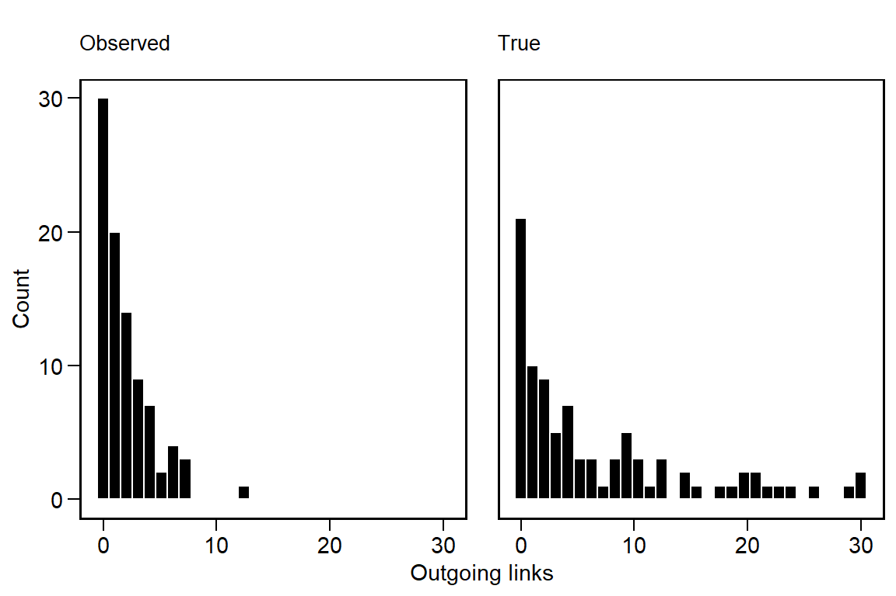
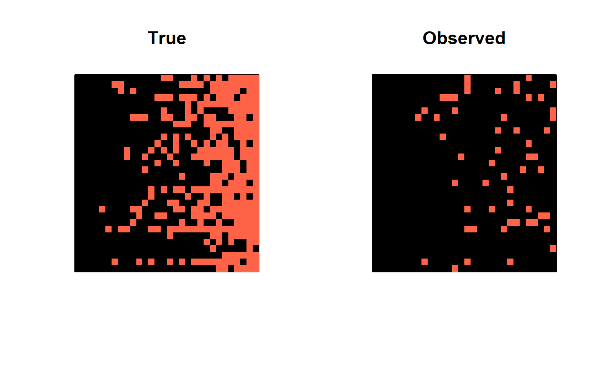
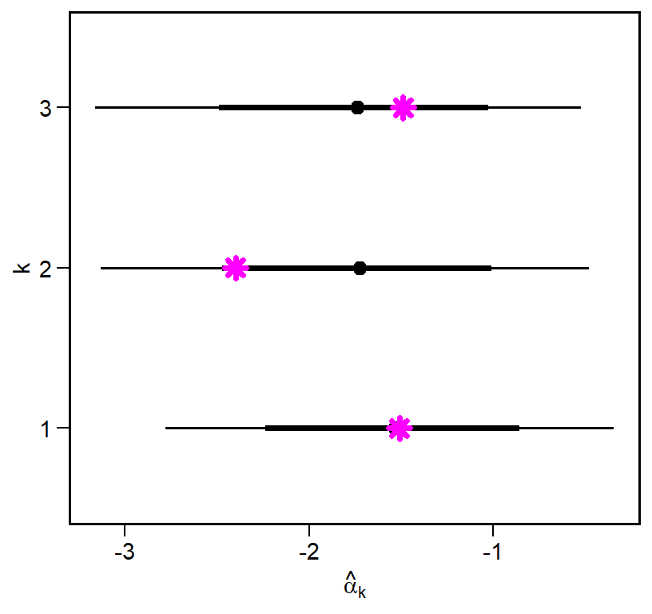
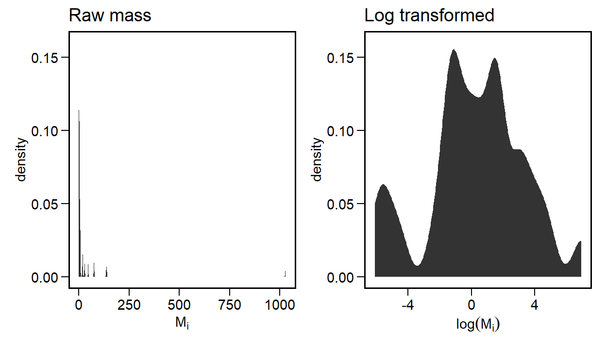
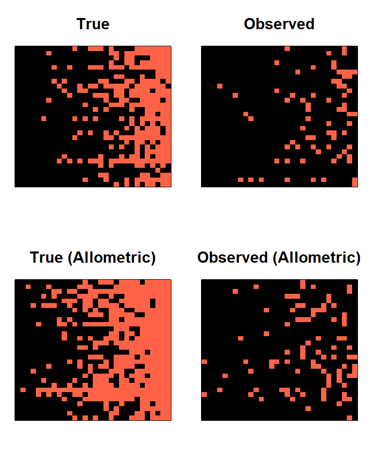
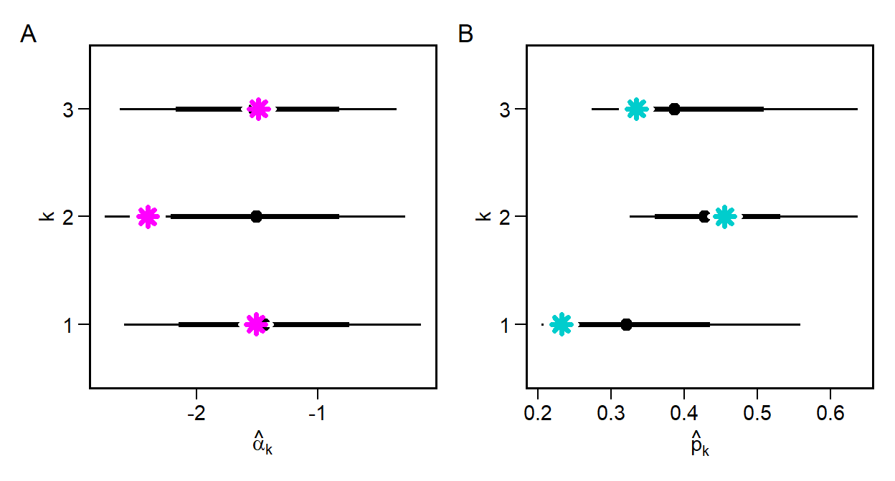

library(tidyverse)
library(tidygraph)
library(ggraph)
library(graphlayouts)
library(igraph)
library(patchwork)
library(latex2exp)Introduction
Food webs are often represented as network graphs, where nodes represent species and links represent observed feeding interactions, or potential feeding interactions inferred from species traits. The Web of Life database houses many such graphs, showcasing their interesting structural patterns and the tremendous efforts ecologists have gone to in order to collect these challenging data.
A particular challenge when collecting food web data is knowing whether sampling effort is sufficient. Consider the implications of missing some feeding links. If an interaction involving even a single rare species goes unobserved, it can impact the overall network structure. Since many theories of food webs focus directly on explaining the structure of food webs, measurement models are needed that can help us infer whether the observed structure results from fundamental processes of community assembly or from partial sampling. In this blog post, we explore this measurement problem and develop some preliminary simulations and validations.
To begin, let’s lay out a basic model. Let’s assume that we want to infer species interactions using a hierarchical model (multiple food webs). This let’s us pool information from across multiple webs to understand our ability to detect trophic links.
For each food web \(k = 1,...,K\), we observe pairs of species interactions \(A^{\text{obs}}_{ij,k} \in \{0,1\}\). A value of \(1\) indicates the presence of a link between \(i \rightarrow j\). Given this, we model the probability of a link \(\pi_{ij,k}\) as
\[ \begin{equation} \text{logit}(\pi_{ij,k}) = \alpha_k + u_{i,k} + v_{j,k} \end{equation} \]
where \(\alpha_k\) is a baseline interaction rate for web \(k\), and \(u_{i,k}\) and \(v_{j,k}\) are consumer- and resource-specific random effects. We could then say that the “true” set of interactions is Bernoulli distributed
\[ \begin{equation} A^{\text{obs}}_{ij,k} \sim \text{Bernoulli}(\pi_{ij,k}) \end{equation} \] In other words, there is a probability \(\pi_{ij,k}\) that we observe a link between \(ij\) in food web \(k\). Such a probability could be directly computed from \(A\). But if sampling is biased, then this probability will inherit this bias. For this reason, we also need a detection model.
\[ \begin{equation} \text{logit}(p_k) = \mu_p + \sigma_p p^{(z)}_k \end{equation} \]
We assume that each web has its own rate of detection \(p_k\). The parameter \(\mu_p\) is the average log-odds of detection across all food webs with a specific deviation of web \(k\) from the global average, which we model as non-centered: \(\sigma_p p^{(z)}_k\).
It follows that the probability of observing a link is
\[ \begin{equation} q_{ij,k} = p_k \cdot \pi_{ij,k} \end{equation} \] We use this to amend our original likelihood to
\[ \begin{equation} A^{\text{obs}}_{ij,k} \sim \text{Bernoulli}(q_{ij,k}) \end{equation} \]
In essence, this model assumes that
- If \(A^{\text{true}}_{ij,k} = 0\), then \(A^{\text{obs}}_{ij,k} = 0\).
- If \(A^{\text{true}}_{ij,k} = 1\), then we observe \(A^{\text{obs}}_{ij,k} = 1\) with probability \(\pi_{ij,k}\).
Although false positives are also a possible source of bias, we leave this out of the model, for now.
Finally, we need to declare hierarchical, non-centered priors for all parameters, beginning first with the interaction rates, then the detection probabilities, and finally the random effects. We assume a weakly informative \(\mathcal{N}(0,1)\) prior on all latent deviations, and \(\text{Exponential}(1)\) for all SD.
Interaction rates
\[ \begin{align} \pi_{ij,k} &= \text{logit}^{-1}(\alpha_k + u_{i,k} + v_{j,k}) \qquad &\text{true link probability} \\ \alpha_k &= \mu_{\alpha} + \sigma_{\alpha} \alpha^{(z)}_k \qquad &\text{non-centered} \\ \alpha^{(z)} &\sim \mathcal{N}(0,1) \qquad &\text{latent deviation} \\ \mu_{\alpha} &\sim \mathcal{N}(0,1) \qquad &\text{global mean interaction rate} \\ \sigma_{\alpha} &\sim \text{Exponential}(1) \qquad &\text{global interaction SD} \end{align} \]
Detection
\[ \begin{align} p_k &= \text{logit}^{-1}(\mu_{p} + \sigma_{p} p^{(z)}_{k}) \qquad &\text{non-centered} \\ p^{(z)}_k &\sim \mathcal{N}(0,1) \qquad &\text{latent deviation} \\ \mu_{p} &\sim \mathcal{N}(0,1) \qquad &\text{global mean detection rate} \\ \sigma_{p} &\sim \text{Exponential}(1) \qquad &\text{global detection SD} \end{align} \]
Consumer and resource random effects
\[ \begin{align} u_{i,k} &= \sigma_u u^{(z)}_{i,k}, \qquad &u^{(z)}_{i,k} \sim \mathcal{N}(0,1) \\ v_{j,k} &= \sigma_v v^{(z)}_{j,k}, \qquad &v^{(z)}_{j,k} \sim \mathcal{N}(0,1) \\ \sigma_u &\sim \text{Exponential}(1) \qquad &\sigma_v \sim \text{Exponential}(1) \end{align} \]
Simulation
To test this model, we need to simulate food webs to serve as the “true” sets of interactions, and “observe” our food webs probabilistically from them. Here are the packages used in this workflow.
We begin by setting up our parameters.
# ---- Setup ----
set.seed(777)
inv_logit = function(x) exp(x) / (1 + exp(x))
# ---- Parameters ----
K = 3
S = 30
mu_alpha = -2
sigma_alpha = 1
sigma_u = 2
sigma_v = 1
mu_p = -1
sigma_p = 0.5
# generate varying base rates and detection probabilities
alpha_k = rnorm(K, mu_alpha, sigma_alpha); alpha_k[1] -1.510214 -2.398541 -1.489164p_k = inv_logit(rnorm(K, mu_p, sigma_p)); p_k[1] 0.2315809 0.4549582 0.3341748We then set up some containers for the simulation results.
# ---- Outputs ----
A_true = array(0, dim = c(S,S,K))
A_obs = array(0, dim = c(S,S,K))The basic procedure is the following:
- Generate \(u_{i,k}\) and \(v_{j,k}\).
- Create \(S \times S\) matrices for the “true” and “observed” webs.
- Generate \(\pi_{ij,k}\) based on \(\alpha_k\) + random effects.
- Adjust observed links based on \(p_k \cdot \pi_{ij,k}\).
for(k in 1:K) {
# Random effects
u_i = rnorm(S, mean = 0, sd = sigma_u)
v_j = rnorm(S, mean = 0, sd = sigma_v)
# Loop
for(i in 1:S) for(j in 1:S) {
pi_ijk = inv_logit(alpha_k[k] + u_i[i] + v_j[j])
A_true[i,j,k] = rbinom(1, 1, pi_ijk)
A_obs[i,j,k] = rbinom(1, 1, p_k[k] * pi_ijk)
}
}This yields the following summary.
dat = data.frame(
web = 1:K,
true_links = apply(A_true, 3, sum),
observed_links = apply(A_obs, 3, sum),
detection = p_k,
alpha = alpha_k
); dat web true_links observed_links detection alpha
1 1 297 55 0.2315809 -1.510214
2 2 124 49 0.4549582 -2.398541
3 3 185 66 0.3341748 -1.489164If we examine the degree distributions across all of the webs, we can see how they differ after we adjust for the probability of detection.
deg = function(A) apply(A, 3, function(mat) rowSums(mat)) |> as.vector()
data.frame(
True = deg(A_true),
Observed = deg(A_obs)
) |>
gather(key = key, value = degree) |>
ggplot(aes(degree)) +
geom_histogram(color='white', fill='black') +
facet_wrap(~key) +
labs(x = 'Outgoing links', y = 'Count')
We can see that the degree distribution of the observed links is more zero-inflated and that the tail of the distribution has contracted. Altering the values of \(\sigma_u\) and \(\sigma_v\) can change these properties to some extent, especially the heaviness of the tail.
A_true1 = A_true[,,1]
A_obs1 = A_obs[,,1]
row_sums = rowSums(A_true1)
sort_order = order(row_sums)
par(mfrow=c(1,2))
image(A_true1[sort_order, sort_order],
col = c('black','tomato'),
main = 'True',
xaxt = 'n', yaxt = 'n')
image(A_obs1[sort_order, sort_order],
col = c('black','tomato'),
main = 'Observed',
xaxt = 'n', yaxt = 'n')
Model Validation
The next step is to develop the hierarchical model in Stan and validate it using the true and observed interaction matrices. First, we define the model block to mirror our simulation and the model notation. This block include the priors for all parameters and hyperparameters.
model {
// priors for latent z-parameters
p_z ~ normal(0,1);
alpha_z ~ normal(0,1);
to_vector(u_z) ~ normal(0,1);
to_vector(v_z) ~ normal(0,1);
//priors for hyperparameters
mu_p ~ normal(0,1);
sigma_p ~ exponential(1);
mu_alpha ~ normal(0,1);
sigma_alpha ~ exponential(1);
sigma_u ~ exponential(1);
sigma_v ~ exponential(1);
// likelihood
for(k in 1:K) {
// detection random effect
real p_k = inv_logit(mu_p + sigma_p * p_z[k]);
// link random effect
real alpha_k = mu_alpha + sigma_alpha * alpha_z[k];
for(i in 1:N_cons) {
// consumer random effects
real u_ik = sigma_u * u_z[i,k];
for(j in 1:N_res) {
// resource random effect
real v_jk = sigma_v * v_z[j,k];
// link probability
real pi_ijk = inv_logit(alpha_k + u_ik + v_jk);
// detection adjusted probability
real q_ijk = p_k * pi_ijk;
// likelihood
A[i,j,k] ~ bernoulli(q_ijk);
}
}
}
}For all parameters that have priors, we declare them in the parameters block.
parameters {
vector[K] p_z;
vector[K] alpha_z;
matrix[N_cons, K] u_z;
matrix[N_res, K] v_z;
real mu_p;
real<lower=0> sigma_p;
real mu_alpha;
real<lower=0> sigma_alpha;
real<lower=0> sigma_u;
real<lower=0> sigma_v;
}Finally, we set up the data needed for the model.
data_list = list(
N_cons = S,
N_res = S,
K = K,
A = A_obs
)This corresponds to
data {
int<lower=1> N_cons;
int<lower=1> N_res;
int<lower=1> K;
// observed adjacency
array[N_cons, N_res, K] int<lower=0, upper=1> A;
}View the full stan model.
data {
int<lower=1> N_cons;
int<lower=1> N_res;
int<lower=1> K;
// observed adjacency
array[N_cons, N_res, K] int<lower=0, upper=1> A;
}
parameters {
// non-centered latent effects
vector[K] p_z;
vector[K] alpha_z;
matrix[N_cons, K] u_z;
matrix[N_res, K] v_z;
// hyperparameters
real mu_p;
real<lower=0> sigma_p;
real mu_alpha;
real<lower=0> sigma_alpha;
real<lower=0> sigma_u;
real<lower=0> sigma_v;
}
model {
// priors for latent z-parameters
p_z ~ normal(0,1);
alpha_z ~ normal(0,1);
to_vector(u_z) ~ normal(0,1);
to_vector(v_z) ~ normal(0,1);
//priors for hyperparameters
mu_p ~ normal(0,1);
sigma_p ~ exponential(1);
mu_alpha ~ normal(0,1);
sigma_alpha ~ exponential(1);
sigma_u ~ exponential(1);
sigma_v ~ exponential(1);
// likelihood
for(k in 1:K) {
// detection random effect
real p_k = inv_logit(mu_p + sigma_p * p_z[k]);
// link random effect
real alpha_k = mu_alpha + sigma_alpha * alpha_z[k];
for(i in 1:N_cons) {
// consumer random effects
real u_ik = sigma_u * u_z[i,k];
for(j in 1:N_res) {
// resource random effect
real v_jk = sigma_v * v_z[j,k];
// link probability
real pi_ijk = inv_logit(alpha_k + u_ik + v_jk);
// detection adjusted probability
real q_ijk = p_k * pi_ijk;
// likelihood
A[i,j,k] ~ bernoulli(q_ijk);
}
}
}
}After saving this model, we fit it using cmdstanr like so. This model samples in under a minute with 4 parallel chains when S = 30 and K = 3.
library(cmdstanr)
mod <- cmdstan_model("detection_model.stan")
fit1 <- mod$sample(
data = data_list,
seed = 123,
chains = 4,
parallel_chains = 4,
adapt_delta = 0.95
)
fit$save_output_files()Our primary task is to determine whether the model can recover the parameters that we used within the simulation. Two focal parameters are the baseline interaction probability \(\alpha_k\) and the detection probability \(p_k\). As a reminder, we generated these values by setting a \(\mu*\) and \(\sigma*\) for each and then drawing them K times.
focal_pars = data.frame(k = factor(1:k), alpha_k, p_k)
focal_pars k alpha_k p_k
1 1 -1.510214 0.2315809
2 2 -2.398541 0.4549582
3 3 -1.489164 0.3341748Since we modeled these as non-centered parameters, we need to reconstruct them from the draws. We will do this using the tidybayes package for handling Bayesian models in R.1 Let’s start with \(\alpha_k\). We will generate a predicted \(\hat{\alpha}_k\) by pulling out alpha_z[k], mu_alpha, and sigma_alpha and the computing alpha_k_hat.
library(tidybayes)
alpha_k_draws = fit1 |>
spread_draws(mu_alpha, sigma_alpha, alpha_z[k]) |>
group_by(k) |>
mutate(alpha_k_hat = mu_alpha + sigma_alpha * alpha_z) We can summarize the posterior distribution in many ways. Here I will plot this distribution and overlay the original values.

\(\hat{\alpha}_k\) falls within the density intervals in all cases, and comes extremely close to the mean for webs 1 and 3. We can now do this same to compute \(\hat{p}_k\), though in this case we need to transform the model parameters from the log-odds scale to a probability scale.
p_k_draws = fit1 |>
spread_draws(p_z[k], sigma_p, mu_p) |>
group_by(k) |>
mutate(p_k_hat = inv_logit(mu_p + sigma_p*p_z))
p_k_draws |>
ggplot(aes(x=p_k_hat, y=factor(k))) +
stat_pointinterval(color='black', .width=c(0.67,0.9)) +
labs(x = TeX("$\\hat{p}_k$"), y = 'k') +
geom_point(data=focal_pars,
aes(x = p_k, y=k),
color = 'white', pch=8, size=4, stroke=2) +
geom_point(data=focal_pars,
aes(x = p_k, y=k),
color = 'cyan3', pch=8, size=2, stroke=2)
Again we come very close to recovering the true parameters, with the biggest difference being in web 2. Although we can certainly be more precise, this is still a good sign that the model could, in principle, estimate the latent detection probability \(p_k\).
Non-Random Links
Now that we have a basic model and simulation skeleton, we should consider which traits might lead to a species having more or less feeding links. For example, we could expect that larger species may have broader diets. This idea has be presented many times, with notable examples coming from Petchey et al. (2008) and Allesina (2011). Here we can make a simplistic assumption that the mass of a consumer \(M_i\) can have a linear, additive effect on the probability of a link.2
\[ \begin{equation} \text{logit}(\pi_{ij,k}) = \alpha_k + (u_{i,k} + b M_i) + v_{j,k} \end{equation} \]
Rather than having a single parameter \(b\) for all webs, it is more likely that we have distinct allometric relationships per web, because each simulated web could represent a distinct ecological community. This implies a random slopes model:
\[ \begin{align} \text{logit}(\pi_{ij,k}) &= \alpha_k + (u_{i,k} + b_k M_{i,k}) + v_{j,k} \\ b_k &= \mu_b + \sigma_b b^{(z)}_k \\ \mu_b &\sim \mathcal{N}(0,1) \\ b^{(z)}_k &\sim \mathcal{N}(0,1) \\ \sigma_b &\sim \text{Exponential}(1) \\ \end{align} \]
where \(i \in \{1,...,S\}\) and \(k \in \{1,...,K\}\). This means that \(i\) in web \(k = 1\) is not the same as \(i\) in web \(k = 2\).
# ---- Setup ----
set.seed(777)
inv_logit = function(x) exp(x) / (1 + exp(x))
# ---- Parameters ----
K = 3
S = 30
mu_alpha = -2
sigma_alpha = 1
sigma_u = 2
sigma_v = 1
mu_p = -1
sigma_p = 0.5
mu_b = 1
sigma_b = 0.3
# consumer mass
M = matrix(NA_real_, nrow = S, ncol = K)
# generate varying base rates and detection probabilities, and body mass effects
alpha_k = rnorm(K, mu_alpha, sigma_alpha)
p_k = inv_logit(rnorm(K, mu_p, sigma_p))
b_k = rnorm(K, mu_b, sigma_b)
# ---- Outputs ----
A_true = array(0, dim = c(S,S,K))
A_obs = array(0, dim = c(S,S,K))
A_Mtrue = array(0, dim = c(S,S,K))
A_Mobs = array(0, dim = c(S,S,K))
for(k in 1:K) {
# Random effects
u_i = rnorm(S, mean = 0, sd = sigma_u)
v_j = rnorm(S, mean = 0, sd = sigma_v)
# Mass
mass_k = exp(rnorm(S, mu_b, sigma_b))
M[,k] = log(mass_k)
# Loop
for(i in 1:S) for(j in 1:S) {
pi_ijk = inv_logit(alpha_k[k] + u_i[i] + v_j[j])
A_true[i,j,k] = rbinom(1, 1, pi_ijk)
A_obs[i,j,k] = rbinom(1, 1, p_k[k] * pi_ijk)
# body mass model
.pi_ijk = inv_logit(alpha_k[k] + (u_i[i] + b_k[k] * M[i,k]) + v_j[j])
A_Mtrue[i,j,k] = rbinom(1, 1, .pi_ijk)
A_Mobs[i,j,k] = rbinom(1, 1, p_k[k] * .pi_ijk)
}
}Clearly the choice of the distribution of body masses will have an influence over this simulation. Here I assume that body masses are heavy-tailed and that we model them on a log-scale. For example, the code above gives the following:
data.frame(mass_k) |>
ggplot(aes(x=mass_k)) +
stat_density(adjust = 0.5) +
labs(x=expression(M[i])) +
ggtitle('Raw mass') +
data.frame(M=M[,1]) |>
ggplot(aes(x=M)) +
stat_density(adjust = 0.5) +
labs(x=expression(log(M[i]))) +
ggtitle('Log transformed') 
A_true1 = A_true[,,1]
A_obs1 = A_obs[,,1]
A_Mtrue1 = A_Mtrue[,,1]
A_Mobs1 = A_Mobs[,,1]
row_sums = rowSums(A_true1)
sort_order = order(row_sums)
par(mfrow=c(2,2), mar=c(3,1,3,1))
image(A_true1[sort_order, sort_order], col = c('black','tomato'), main = 'True', xaxt = 'n', yaxt = 'n')
image(A_obs1[sort_order, sort_order], col = c('black','tomato'), main = 'Observed', xaxt = 'n', yaxt = 'n')
row_sums = rowSums(A_Mtrue1)
sort_order = order(row_sums)
image(A_Mtrue1[sort_order, sort_order], col = c('black','tomato'), main = 'True (Allometric)', xaxt = 'n', yaxt = 'n')
image(A_Mobs1[sort_order, sort_order], col = c('black','tomato'), main = 'Observed (Allometric)', xaxt = 'n', yaxt = 'n')
The effect of body mass concentrates the true links toward the largest species. It is also gravitational: energy, in the form of biomass, flows toward these largest species. The effect of this on the observed links is very subtle but not entirely absent.
lo = layout_as_tree(graph_from_adjacency_matrix(A_Mobs1))
par(mfrow=c(2,2), mar=c(3,1,3,1))
plot(graph_from_adjacency_matrix(A_true1),
edge.arrow.size=0.2,
vertex.color = 'white',
vertex.label = NA,
layout = lo,
main = 'True')
plot(graph_from_adjacency_matrix(A_obs1),
edge.arrow.size=0.2,
vertex.color = 'white',
vertex.label = NA,
layout = lo,
main = 'Observed')
plot(graph_from_adjacency_matrix(A_Mtrue1),
edge.arrow.size=0.2,
vertex.color = 'white',
vertex.label = NA,
layout = lo,
main = 'True (Allometric)')
plot(graph_from_adjacency_matrix(A_Mobs1),
edge.arrow.size=0.2,
vertex.color = 'white',
vertex.label = NA,
layout = lo,
main = 'Observed (Allometric)')
Stan model
Now we adjust the original Stan model to include these biomass effects. The main changes, besides adding the non-centered effects of \(b_k\), are to include the body mass matrix M.
data {
int<lower=1> N_cons;
int<lower=1> N_res;
int<lower=1> K;
matrix[N_cons,K] M;
// observed adjacency
array[N_cons, N_res, K] int<lower=0, upper=1> A;
}
parameters {
// body mass slopes
vector[K] b_z;
real mu_b;
real<lower=0> sigma_b;
// non-centered latent effects
vector[K] p_z;
vector[K] alpha_z;
matrix[N_cons, K] u_z;
matrix[N_res, K] v_z;
// hyperparameters
real mu_p;
real<lower=0> sigma_p;
real mu_alpha;
real<lower=0> sigma_alpha;
real<lower=0> sigma_u;
real<lower=0> sigma_v;
}
model {
// b priors
b_z ~ normal(0,1);
mu_b ~ normal(0,1);
sigma_b ~ exponential(1);
// priors for latent z-parameters
p_z ~ normal(0,1);
alpha_z ~ normal(0,1);
to_vector(u_z) ~ normal(0,1);
to_vector(v_z) ~ normal(0,1);
//priors for hyperparameters
mu_p ~ normal(0,1);
sigma_p ~ exponential(1);
mu_alpha ~ normal(0,1);
sigma_alpha ~ exponential(1);
sigma_u ~ exponential(1);
sigma_v ~ exponential(1);
// likelihood
for(k in 1:K) {
// detection random effect
real p_k = inv_logit(mu_p + sigma_p * p_z[k]);
// link random effect
real alpha_k = mu_alpha + sigma_alpha * alpha_z[k];
// body mass slopes
real b_k = mu_b + sigma_b * b_z[k];
for(i in 1:N_cons) {
// consumer random effects
real u_ik = sigma_u * u_z[i,k];
for(j in 1:N_res) {
// resource random effect
real v_jk = sigma_v * v_z[j,k];
// link probability
real pi_ijk = inv_logit(alpha_k + (u_ik + b_k*M[i,k]) + v_jk);
// detection adjusted probability
real q_ijk = p_k * pi_ijk;
// likelihood
A[i,j,k] ~ bernoulli(q_ijk);
}
}
}
}As before, we fit the model but with slightly increased adapt_delta to accommodate.
Bmod <- cmdstan_model("detection_model_bodymass.stan")
fit2 <- modB$sample(
data = data_list,
seed = 123,
chains = 4,
parallel_chains = 4,
adapt_delta = 0.95
)
fit2$save_output_files()As before, we want to compare the predicted values of \(\hat{\alpha}_k\), \(\hat{p}_k\), and \(\hat{b}_k\) to their input values.
focal_pars2 = data.frame(k = factor(1:k),
alpha_k, p_k, b_k)
focal_pars2 k alpha_k p_k b_k
1 1 -1.510214 0.2315809 1.0608113
2 2 -2.398541 0.4549582 1.3326813
3 3 -1.489164 0.3341748 0.9381326
Again we see a decent concordance between the predicted and input values, although in some cases we are near the edge of the highest density posterior interval.
Next, we examine the predicted \(\hat{b}_k\) from the posterior against the input values.

References
Allesina, Stefano. 2011. “Predicting Trophic Relations in Ecological Networks: A Test of the Allometric Diet Breadth Model.” Journal of Theoretical Biology 279 (1): 161–68.
Petchey, Owen L, Andrew P Beckerman, Jens O Riede, and Philip H Warren. 2008. “Size, Foraging, and Food Web Structure.” Proceedings of the National Academy of Sciences 105 (11): 4191–96.